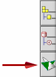

If you are using Teamcenter Integration for NX, the Teamcenter Navigator palette is also located on the NX Resource bar and provides access to your home area within Teamcenter.

You can use Teamcenter Navigator to search, open, and organize your parts, assemblies, drawings, and so on.
The Teamcenter Navigator palette is unavailable if the Open or New dialog box is open, or when you are prompted for a file.
Teamcenter Navigator lets you manage the NX data in Teamcenter without manually switching to the Teamcenter software. You can:
Drag an Item, Item Revision or dataset from Teamcenter Navigator to NX
Drag a part onto a master part
Create new folders
Drag Items from one folder to another folder
Cut, copy, and paste Items into folders
Cut, copy, and paste datasets from one folder to another folder
Search for an item, item revision, or dataset in Teamcenter.
Add columns to include Teamcenter information.